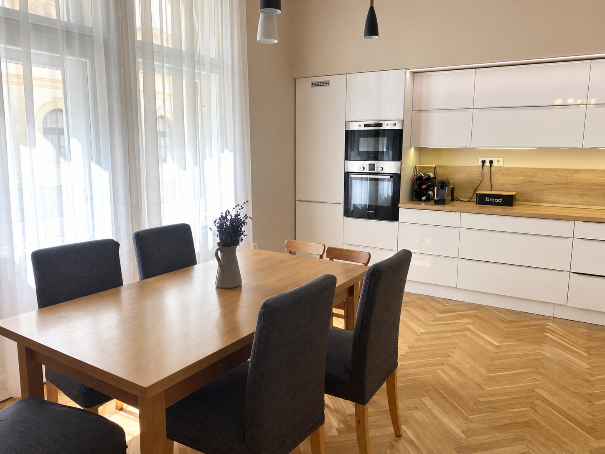

PÉCS · SZÍNHÁZ TÉR
Színház téri
otthon.
132 m²-es polgári lakás Pécs történelmi belvárosában, két erkéllyel, külön vendég-WC-vel és szülői gardróbbal.
A forrásposzt irányára 149,9 millió Ft. A jellegzetes fa bútorok, a világos konyha és a kék gyerekszoba a digitálisan rendezett bemutatóban is felismerhetők.

01 · MOZGÓKÉP
Rendezett képek filmje
36 másodperces fotófilm a saját lakás digitálisan rendezett képeiből, felirat és vízjel nélkül.
01B · 3D KÖRBEJÁRÁS
Egy kör a lakás körül,
majd közelebb.
48 másodperces saját 3D-körbejárás: a nyitott áttekintést a konyha, nappali, gyerekszoba, háló, fürdő, hall, gardrób, utcai erkély és vendég-WC közeli nézetei követik.
02 · INTERAKTÍV TÉR
Lépj közelebb
a részletekhez.
SZEMLÉLTETŐ TÉRMODELL · NEM FELMÉRÉS
Az eredeti alaprajz és saját fotók alapján készült, alacsony falakkal megnyitott térmodell. A nyílások ajtólap nélkül láthatók; a bevetett ágyak, a három gyerekágy és a két erkély megmaradnak. Nem helyszíni felmérés.
A 3D csak indítás után töltődik be. A megjelenített állókép saját render, nem ingatlanfotó.
Egér / érintés: húzás és zoom · Billentyűzet: nyilak, + / −, Home · A részletek gombokkal is elérhetők.
03 · FOTÓGALÉRIA
Saját forrásképek
Húsz saját forráskép: tizenöt lakásbelső, egy közös lépcsőház, két külön erkély, egy utcakép és egy tájékoztató alaprajz. Minden kép kategóriája és digitális szerkesztése külön jelölt.
04 · ÁTLÁTHATÓ FORRÁSOK
Saját képek és jelölt feltételezések.
- Saját kiinduló hirdetés
- 132 m²-es polgári lakás Pécs történelmi belvárosában, két erkéllyel, külön vendég-WC-vel és szülői gardróbbal. A forrásposzt irányára 149,9 millió Ft. A jellegzetes fa bútorok, a világos konyha és a kék gyerekszoba a digitálisan rendezett bemutatóban is felismerhetők.
- Képi források
- Húsz saját forráskép: tizenöt lakásbelső, egy közös lépcsőház, két külön erkély, egy utcakép és egy tájékoztató alaprajz. Minden kép kategóriája és digitális szerkesztése külön jelölt.
- Film és modell
- 36 másodperces fotófilm a saját lakás digitálisan rendezett képeiből, felirat és vízjel nélkül. 48 másodperces saját 3D-körbejárás: a nyitott áttekintést a konyha, nappali, gyerekszoba, háló, fürdő, hall, gardrób, utcai erkély és vendég-WC közeli nézetei követik. Az eredeti alaprajz és saját fotók alapján készült, alacsony falakkal megnyitott térmodell. A nyílások ajtólap nélkül láthatók; a bevetett ágyak, a három gyerekágy és a két erkély megmaradnak. Nem helyszíni felmérés.
- Forráskorlátok
- A hirdetés négy szobát említ, az alaprajzon két szoba és egy nappali szerepel. Az eltérést nem oldjuk fel kitalált helyiséggel. Az emeletszám nincs igazolva; a közös lépcsőház nem a lakás része. A méretek és rejtett részletek szemléltető feltételezések.
- Digitális képrendezés
- Vízjel és alkalmi rendetlenség eltávolítása, bevetett ágyak és részletjavítás. Az eredeti források változatlanul megmaradtak.